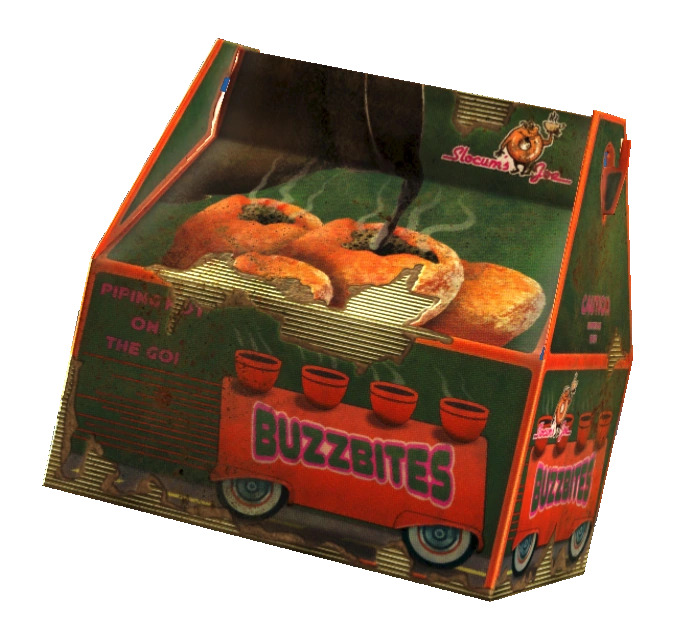

Slocum's BuzzBites
Fallout 4

An interesting donut spinoff that fortunately never made it to the general public
Almost everyone appreciates donuts, a little coffee makes a great side drink.
Donuts filled with coffee flavored filling doesn't sound bad at all!
Unfortunately, thats not what Slocum's BuzzBites are. They are filled with actual hot coffee
Obviously, these led to 3rd degree burns during prototype testing and were thus deemed unsafe.
Ingredients
- Dirty Water
Probably a post-war substitute
Hopefully...
- Mirelurk Eggs
Believe it or not, Mirelurk were bred before the war
- Oil
I'm sure originally they meant vegetable
Post-war though? Any kind will work
- Razorgrain
Definite post-war substitute, courtesy of the Brotherhood of Steel
- Coffee Tin
I am sure this is for the coffee, not the tin
Like many other creations of the Fallout Universe, this recipe excels at showing both the
frivolous treatment of safety of the pre-war corporate culture and the post-war creativity
and resilience in the face of extreme scarcity.
Steps
- Acquire ingredients:
- Dirty water is everywhere! Just make sure you dont fall in while collecting it
- Mirelurk eggs can be found in sewers and near swampy areas, watch out for mom and dad!
- Oil is often found in garages and machine shops
- Razorgrain is found at farms and is sold by merchants
- Coffee tins can be found in kitchens scattered throughout the Wastelands
- Locate or build a cooking station
- Interact with the cooking station with all ingredients present
- Select the desired recipe and make as many as you'd like (or have ingredients for)
More Recipes